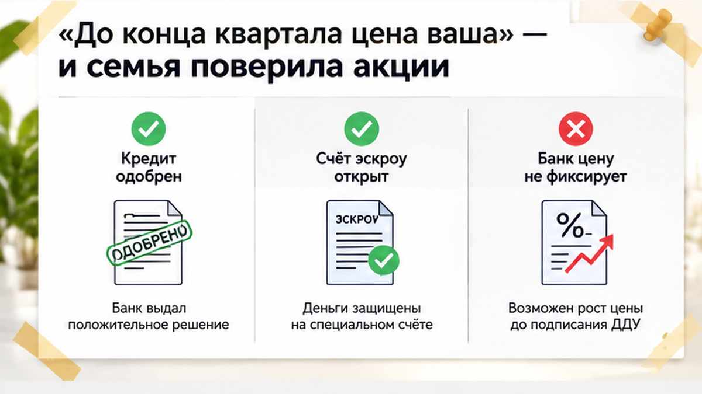
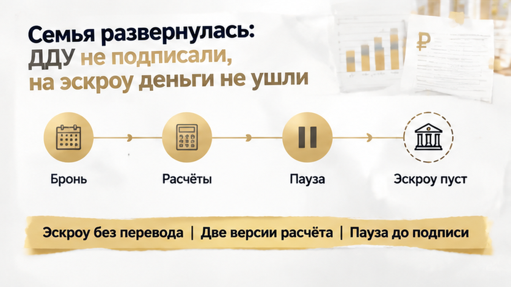

За 5 дней до подписания ДДУ семье в Тюмени прислали новую цену квартиры — одобренной ипотеки и подготовленного взноса на покупку уже не хватало. В офисе продаж обещание звучало совсем иначе: «Пока бронь действует, цена ваша». Под него семья рассчитывала бюджет и готовилась к сделке, а не к поиску дополнительных денег. Банк одобрил кредит, счёт эскроу открыли, впереди оставалась проверка договора долевого участия — того самого ДДУ. И вот вместо обещанной фиксации перед покупателями оказался расчёт, который их бюджет не выдерживал.
В Telegram и MAX разбираю покупки новостроек изнутри: что обещают на встрече и что потом предлагают подписать. Без перевода с юридического — на обычном языке, с вниманием к вашим деньгам.
В сентябре в рекламе были предложения «до 30 сентября»: скидки на отдельные квартиры, варианты с паркингом или кладовой, рассрочка. В офисе семья обсуждала уже не баннер, а конкретную покупку. Менеджер сказал, что цена зафиксирована до конца квартала. На уточнение ответил ещё понятнее: пока действует бронь, стоимость сохранится.
Обычный покупатель слышит в этом разрешение спокойно заниматься ипотекой. Квартиру выбрали, деньги посчитали, срок обозначили — что ещё уточнять? Семье была нужна не самая эффектная скидка, а сумма, которую можно потянуть: сколько внести сейчас и какой платёж останется потом. Именно на эту сумму они и опирались.
Я в такой формулировке смотрю на другое: где обещание привязано к выбранной квартире? Не к акции вообще, не к перечню предложений, а к её номеру, площади и стоимости. Если в покупку входят дополнительные помещения, важно видеть и их условия. Иначе покупатель и продавец могут обсуждать разные вещи, даже когда оба произносят слово «цена».
«До конца квартала» может быть всего лишь сроком рекламы. Или сроком предложения на определённые квартиры. Для семьи же эта фраза означала: наша квартира не подорожает, пока мы оформляем покупку. Разница небольшая на слух, но решающая для кошелька.
Со словом «бронь» похожая история. Оно создаёт ощущение, что договорённость уже закрепили, хотя содержание зависит от бумаги: что удерживают за покупателем, на какой срок и за какой платёж. Цена может быть зафиксирована, а может допускать пересмотр. И разговорное «мы внесли задаток» ещё не объясняет, что написано в соглашении и как возвращаются деньги.

К подготовке договора семья прошла банковский этап: кредит одобрен, первоначальный взнос рассчитан, эскроу открыт. Для покупателя это выглядит как выход на финишную прямую. Самая хлопотная часть будто позади, осталось прочитать бумаги и поставить подписи. Но готовность банка выдать деньги и готовность продавца сохранить цену — не одно и то же.
Банк не закрепляет стоимость квартиры вместо застройщика. Он рассматривает кредит под определённую сумму и объект, а собственные деньги покупатель добавляет из своего бюджета. Если квартира дорожает, разницу не закрывает сам факт одобрения. Её нужно откуда-то взять — либо не соглашаться на изменившиеся условия.
Здесь дело было не в ставке: банковские условия не стали причиной остановки. Вопрос возник на стороне продавца, в стоимости будущей покупки. Это важно не смешивать, иначе семья начнёт искать решение не там: обсуждать кредит, когда сначала нужно разобраться с ценой квартиры.
Открытый эскроу тоже не подтверждает обещанную скидку. Это счёт для расчётов по сделке, а не документ о том, сколько должна стоить квартира. Поэтому я не считаю получение проекта ДДУ формальностью: именно теперь можно сопоставить обещанное с текстом, под которым покупателю предлагают подписаться.
Новый расчёт пришёл от менеджера вместе с проектом договора. Семья ждала документ на выбранную квартиру, а получила стоимость, под которую покупку не планировала. Разница была не в красивом названии скидки: прежнего кредита вместе с первоначальным взносом на неё уже не хватало.
На таком этапе трудно остановиться. Квартиру выбрали, с банком всё подготовили, до встречи осталось несколько дней. Кажется, что сейчас надо просто дойти до подписи, иначе вся подготовка зря. Но потраченное время не оплачивает прибавку к цене и не делает её посильной для семейного бюджета.
Покупатель держит в голове разговор: «Пока бронь действует, цена ваша». Я в такой момент смотрю, где это обещание записано и к какой квартире относится. Не потому, что словам менеджера заранее нельзя верить. Просто при расхождении расчётов нужны условия, которые можно положить рядом и сравнить, а не два разных воспоминания о встрече.
Здесь важно было отделить одно от другого: банк не поднял ставку — изменилась стоимость самой квартиры. Это разные причины остановки сделки и разные вопросы к участникам. В истории, где накануне ДДУ вырос ипотечный платёж из-за ставки, разбираться приходилось с банковскими условиями. Здесь объяснения требовал расчёт продавца.
Телефонный спор легко уходит в круг: «Нам обещали» — «Вы не так поняли». Первоначальное предложение, переписка и две версии расчёта позволяют говорить предметно. Какая сумма относилась к выбранному лоту? До какого дня она действовала? На каком основании вместо неё появилась другая? Письменный ответ полезнее очередного устного заверения.
В договоре стоимость считали через цену квадратного метра, а рядом стояла оговорка о возможной индексации. Сама по себе формула «цена метра × площадь» — не подвох. Вопрос в другом: получается ли из неё обещанная сумма и что написано о её дальнейшем изменении. Именно эти строки нужно было сопоставить с прежним предложением.
В офисе всё звучало просто: цена ваша. В проекте простоты уже не было. Слово «индексация» без разбора оставляет покупателя в неизвестности: что пересчитывают, на какую дату, по какой формуле? И главное — сколько в итоге придётся заплатить за ту самую квартиру, ради которой оформляли ипотеку.
У закона здесь есть конкретное правило. Статья 5 закона № 214-ФЗ допускает и общую сумму в ДДУ, и расчёт через стоимость единицы площади. После заключения договора менять цену можно по соглашению сторон, если сам договор предусматривает такую возможность, случаи и условия изменения. Поэтому важна не только цифра на странице, но и пункт, который позволяет её пересмотреть.
При этом у семьи ещё не было подписанного и зарегистрированного ДДУ с прежней ценой. Объявить застройщику «вы обязаны продать по первой цифре» только на основании разговора нельзя. Нужно смотреть, что подтверждают предложение, бронь и переписка. Обещание в рекламе и обязательство по конкретной квартире — не одно и то же автоматически.
Подписывать непосильную сумму, чтобы уже потом разбираться с обещаниями, семье не требовалось. Пока условия не согласованы, можно остановить оформление и запросить объяснение расхождений. А платёж за бронь разбирать отдельно: что именно оплачивали и какой порядок возврата записан в соглашении. Открытый эскроу ответа на этот вопрос не даёт.

Семья отказалась продолжать покупку на новых условиях. ДДУ не подписали, на государственную регистрацию не подали, деньги на открытый эскроу не перечислили. Подготовленного взноса и одобренного кредита не хватало, а согласиться с расчётом только потому, что уже дошли до подписания, означало принять неподъёмную цену.
Обещанную стоимость семье не вернули, квартиру на прежних условиях она не купила. Но и открытый счёт не обязывал доводить покупку до конца: эскроу защищает расчёты по зарегистрированному ДДУ, а не обещание менеджера. Здесь до перевода не дошло, поэтому возвращать деньги с эскроу не потребовалось.
С бронью остался отдельный спор — его нельзя закрыть фразой «раз квартиру не купили, всё вернут». Важно, за что внесён платёж и что написано о возврате: аванс, задаток и услуга бронирования — не одно и то же. Остановка сделки известна, исход спора о брони — нет. Для него имеют значение текст соглашения и сохранённые подтверждения обещанной цены.
Устная фиксация цены в офисе продаж — уже обязательство или лишь рекламная фраза, пока в брони и ДДУ не указана конкретная сумма?
Покупатель слышит «цена ваша» и начинает готовиться к переезду. Я при проверке сделки сначала смотрю, где это обещание записано и к какой квартире относится. Не потому, что любой менеджер обманывает: просто рекламная акция, бронь и ДДУ могут говорить о разных условиях. Удобнее положить их рядом, чем по очереди открывать файлы и держать цифры в голове.
| Документ | Что найти | Где можно ошибиться |
|---|---|---|
| Реклама и предложение | Срок акции, выбранную квартиру, условия скидки, необходимость покупать паркинг или кладовую. | «До 30 сентября» может быть сроком рекламы, а не обещанием сохранить вашу цену. |
| Договор брони | Номер квартиры, площадь, стоимость, срок фиксации, возможность пересмотра, назначение платежа и условия возврата. | Само слово «бронь» не объясняет, что закрепили: квартиру, цену или услугу. |
| Проект ДДУ | Итоговую сумму либо цену метра и площадь, основания и условия перерасчёта. | Полученный файл ещё не заключённый договор. Новую версию нужно сравнить с прежним предложением. |
Рекламу с датой, переписку, предложение, бронь, чек и обе версии расчёта стоит сохранить, а причину изменения цены запросить письменно. Это опора для разговора, но не гарантия продажи по первой цифре. При недостоверной рекламе возможна жалоба в ФАС; она сама по себе не возвращает платёж за бронь и не обязывает застройщика подписать ДДУ на прежних условиях.
Не смешивайте разные причины остановки покупки. Когда банк меняет ставку перед ДДУ, проверять нужно кредитные условия. Перенос передачи ключей при деньгах на эскроу — уже другая ситуация. А если прислали договор с другой компанией, отдельно разбирают смену юридического лица застройщика и новый ДДУ.
Такие расхождения разбираю в Telegram и MAX. Подписывайтесь, если выбираете новостройку: вопрос о непонятной строке лучше задать до платежа, а не после.
Отказываться от выбранной квартиры неприятно, особенно когда уже представляешь, как будешь в ней жить. Но назначенная встреча не обязывает соглашаться с любой суммой. Пока деньги не переведены, можно взять паузу и потребовать понятных условий — без оправданий за то, что внимательно читаешь собственный договор.
Я подключаюсь к покупке до брони или аванса, когда ещё можно спокойно сопоставить предложение с документами. Не обещаю сохранить рекламную скидку. Моя задача — помочь разобраться, за что вы собираетесь платить и с какими условиями соглашаетесь.